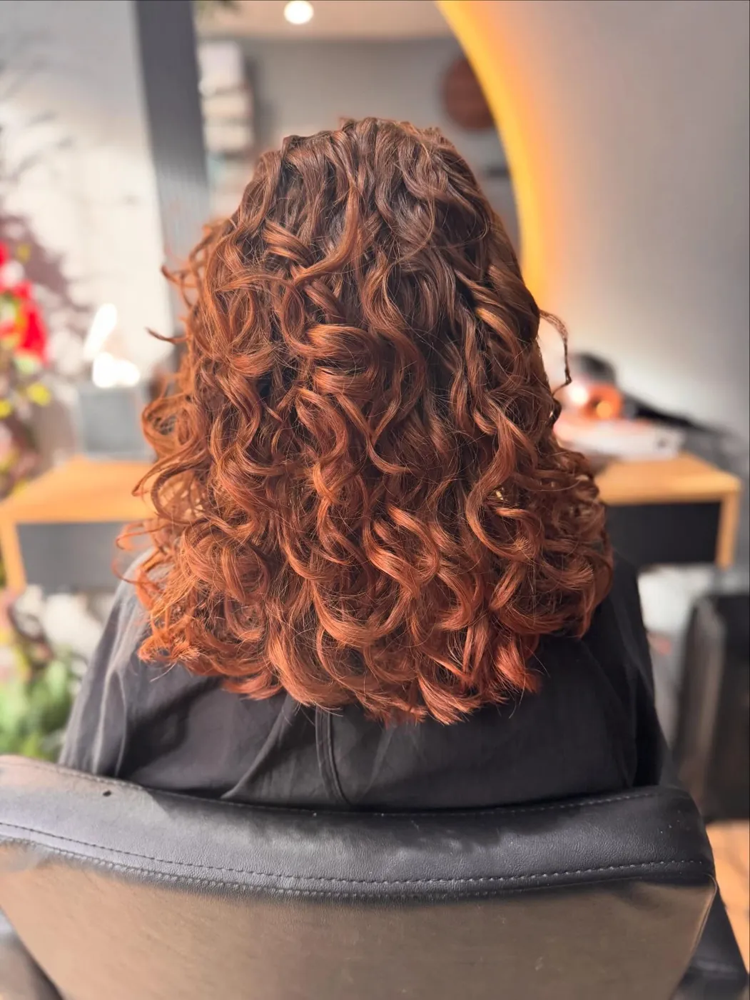
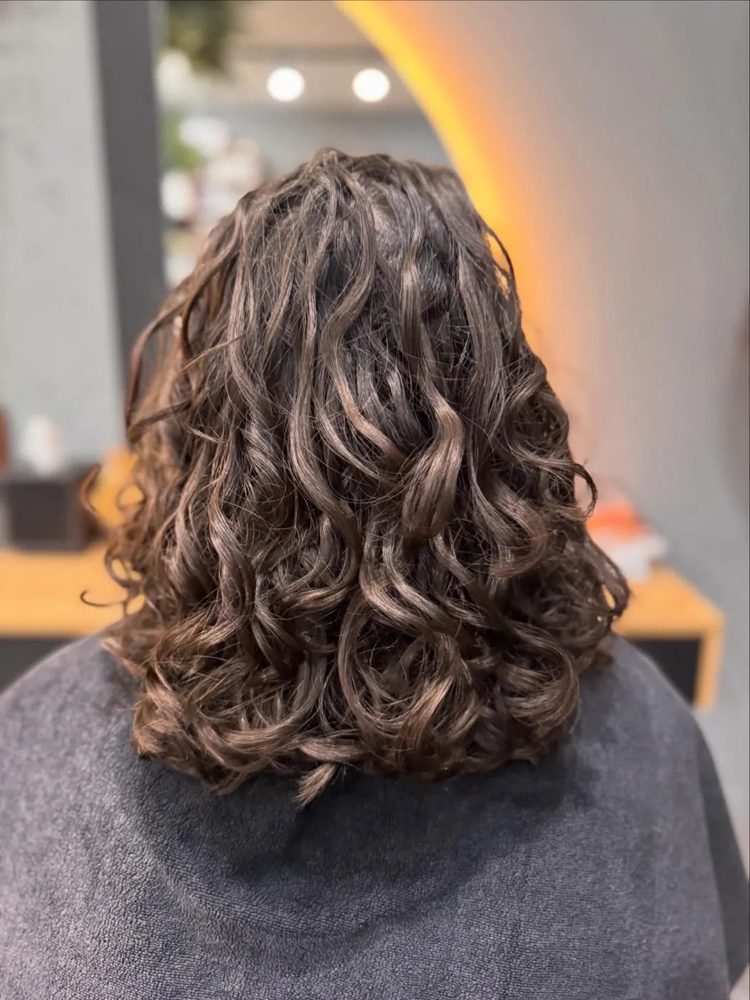
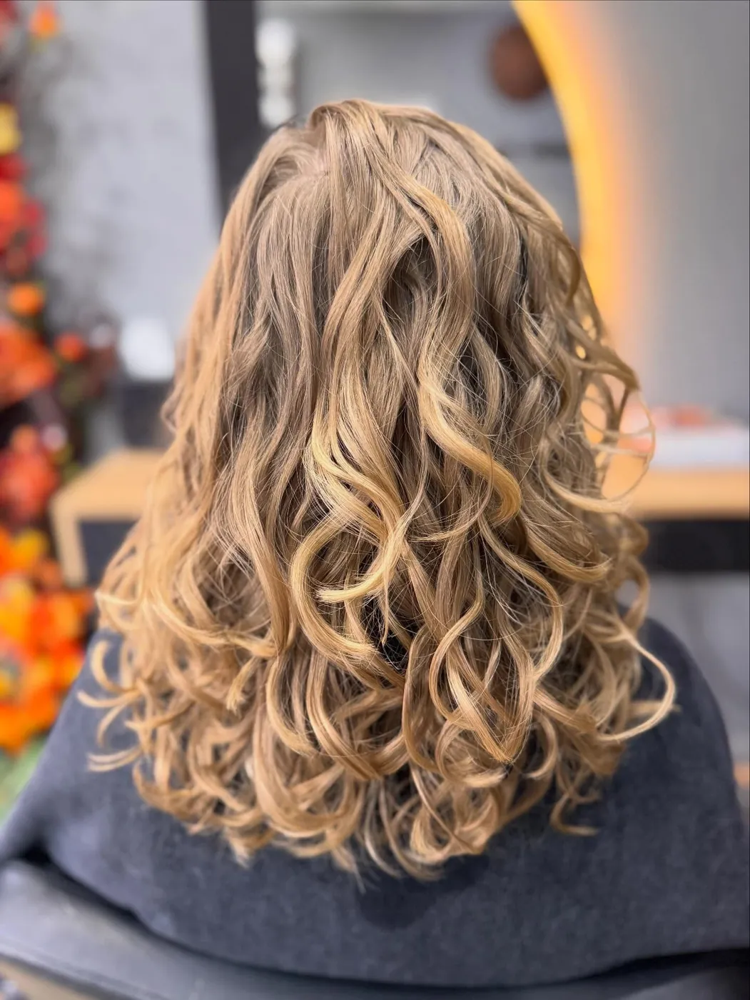
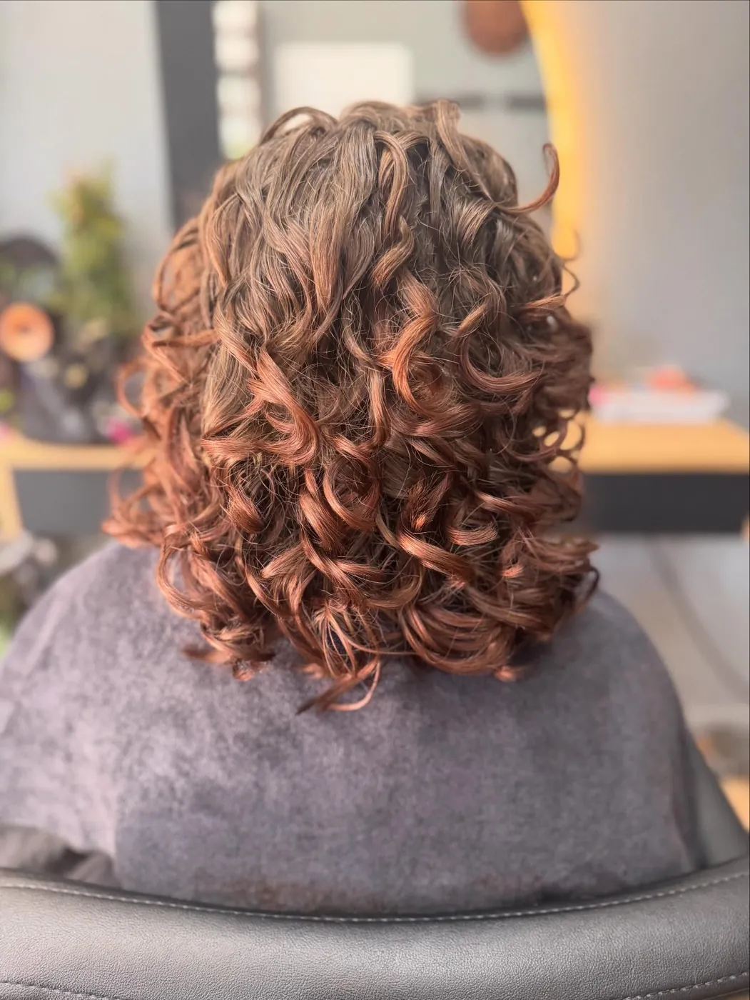
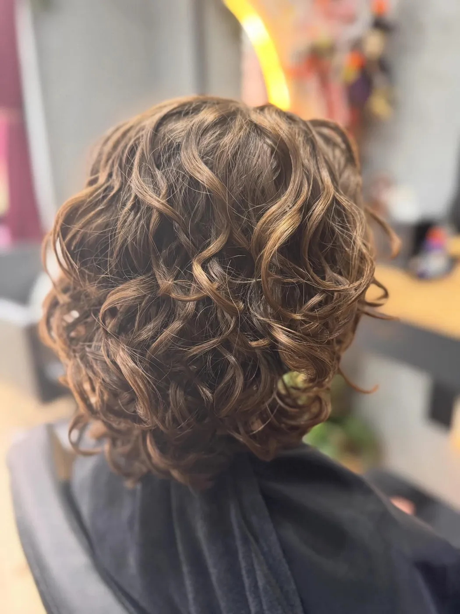
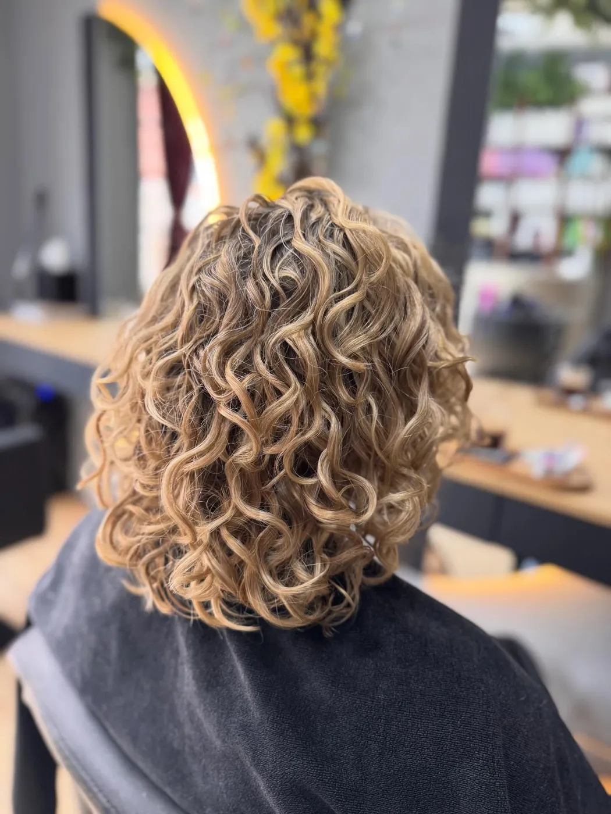
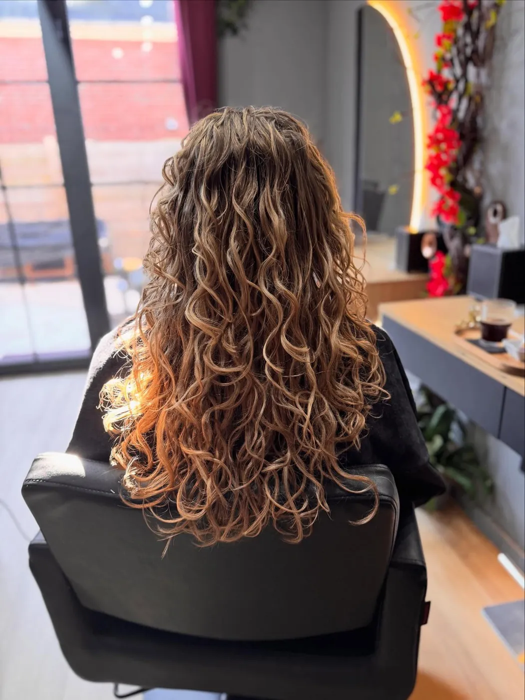

Geknipt op droog haar
Zo blijft je natuurlijke krulpatroon zichtbaar en knipt Ramazan elke krul op de plek waar ze valt. Per krultype past hij een andere techniek toe.
Bij Coiffeur Soirée knipt Ramazan je krullen droog, zodat hij je echte krulpatroon ziet. Daarna leer je hoe je ze thuis zelf verzorgt, met natuurlijke producten volgens de Curly Girl Method.

Zoek dan niet verder!
Zo blijft je natuurlijke krulpatroon zichtbaar en knipt Ramazan elke krul op de plek waar ze valt. Per krultype past hij een andere techniek toe.
Enkel natuurlijke producten volgens de Curly Girl Method. Niet alleen voor een mooie snit, ook om je krullen weer gezond te krijgen.
Je gaat naar huis met een routine die werkt: welke producten, hoeveel, en hoe je ze aanbrengt.
Kom je voor het eerst? Dan raadt Ramazan het volledige pakket aan: knippen, verzorgen en een workshop op maat van jouw haar.
Eerst praten. Hoe gedragen je krullen zich, wat heb je al geprobeerd en welke snit wil je?
De snit gebeurt droog, met een techniek die past bij jouw krultype.
Daarna een wasbeurt met de juiste verzorgingsproducten voor jouw haar.
Ramazan toont hoe je de producten aanbrengt en welke technieken je thuis gebruikt. Zo zie je er altijd fabulous uit.
Kies bij het boeken voor het krullenpakket met adviesgesprek. Veel knopen in je haar? Kom dan met uitgekamd haar, dat spaart tijd.
Plan je eerste bezoekVan lang en zwaar hangend naar kort en volumineus, of gewoon frisse krullen die weer leven. Allemaal klanten van Ramazan.






Ramazan richtte Coiffeur Soirée op en is al jaren een vaste waarde in het vak. Zijn liefde voor krullen begon vroeg: hij werd altijd omringd door curlies. Tijdens zijn opleiding merkte hij al dat krullend haar een heel andere aanpak vraagt, en die zocht hij uit tot in de details.
Na zes jaar Bij Sint-Jacobs in het centrum van Gent ontvangt hij je nu in zijn salon in de Hollenaarstraat in Oostakker.
Afro-, kroes- of gemengd haar? Dan stuurt Ramazan je met plezier door naar zijn collega Shanice, gespecialiseerd in dat haartype, in de Dampoortstraat 91 in Gent.
“Hij geeft zo'n duidelijke uitleg en kent zijn vak zeer goed. Mijn krullen zijn na de knipbeurt en behandeling nog nooit zo mooi geweest.”
★★★★★“Na een lange zoektocht heb ik eindelijk een adres gevonden waar je écht betrouwbare informatie krijgt en waar je meteen voelt dat je krullen in goede handen zijn.”
★★★★★“Mijn haar heb ik voordien altijd verkeerd behandeld, nu weet ik hoe het moet: welke producten, welke handelingen etc.”
★★★★★“Niet zwaar, niet droog, niet vet maar in de originele staat met veel waw-effect. Mijn volgende afspraak is al geboekt.”
Coiffeur Soirée werkt enkel op afspraak. Je krijgt de dag ervoor een sms, en moet je toch verplaatsen, dan doe je dat gewoon online.
Ik maakte deze demo voor jullie om te tonen wat er kan. Na een kort gesprek maak ik er iets veel persoonlijkers van, helemaal naar jullie wens.
Vrijblijvend. Ik kom langs of we bellen.
Op maat, op jullie eigen domein.
Geen voorschot. Jullie betalen pas als alles klaar is.
Hosting, domeinnaam en kleine wijzigingen, zoals nieuwe openingsuren.
Omdat een voorbeeld meer zegt dan een mail. Zo zien jullie meteen wat er kan, en het kost jullie niets.
Nee. Het gesprek is vrijblijvend. Vinden jullie het niks, dan is het daarmee gedaan.
Na ons gesprek staat jullie site binnen 10 tot 14 dagen online.
Zeker. Jullie domeinnaam kan gewoon blijven, de nieuwe site komt in de plaats van de oude.
Nee, dat doe ik op basis van ons gesprek. Eigen foto's zijn mooi meegenomen, maar niet nodig om te starten.